| Module Name | Lecture | Title |
|---|---|---|
| Technology Stack Preparation | L0.1 | Colab + GPU + Tensors |
| Technology Stack Preparation | L0.2 | Math for Neural Networks, Regression and Classification Problems |
| Technology Stack Preparation | L0.3 | Sequence Learning Problem |
| Language Probability and Representation | L1.1 | Course Orientation and Reproducible GenAI Setup |
| Language Probability and Representation | L1.2 | Language Probability and Generative Systems |
| Meaning and Structured Text | L2.1 | Mathematical Foundations Through Language Modeling |
| Meaning and Structured Text | L2.2 | From Words to Structured Text |
AD698 - Applied Generative AI
Early Neural Networks & Natural Language Processing
Nakul R. Padalkar
Boston University
March 12, 2024
How to print Revealjs slides

Course Welcome
- Understand the breadth of generative AI technologies
- Explore core generative model architectures
- Gain insights into practical applications
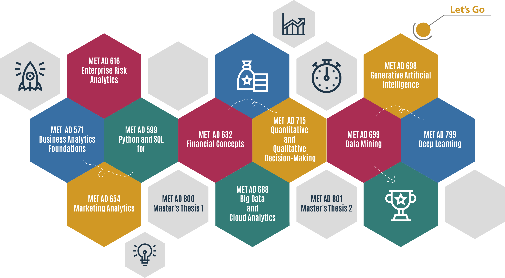
Course Schedule (tentative)
Course Schedule (tentative)
| Module Name | Lecture | Title |
|---|---|---|
| Prompting and Semantic Geometry | L3.2 | Tokenization Embeddings and Semantic Geometry |
| Model Architectures | L4.1 | Transformers Attention and Context |
| Model Architectures | L4.2 | Training Paradigms and Fine-Tuning Pipelines |
| Retrieval and Grounded Generation | L5.1 | Retrieval Augmented Generation Concepts |
| Retrieval and Grounded Generation | L5.2 | Designing Retrieval-Augmented Pipelines |
| Agentic Systems | L6.1 | Efficient Adaptation LoRA QLoRA and PEFT |
| Agentic Systems | L6.2 | Semantic Search Clustering and Change Detection |
Course Grading
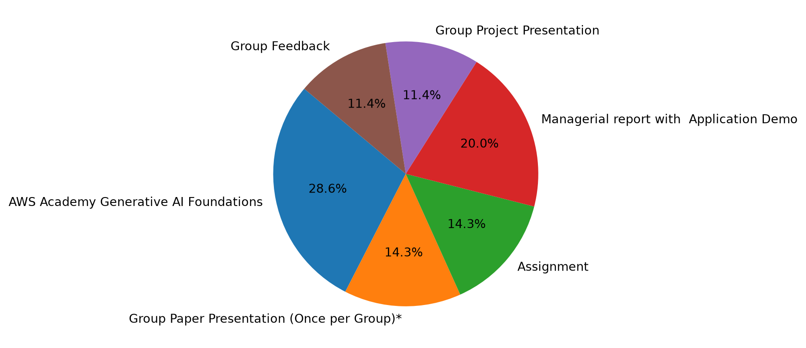
| Class Activity | Count | Points | Max Points |
|---|---|---|---|
| AWS Academy Generative AI Foundations | 1 | 100 | 100 |
| Group Paper Presentation (Once per Group)* | 1 | 50 | 50 |
| Assignment | 4 | 50 | 200 |
| Managerial report with Application Demo | 1 | 70 | 70 |
| Corpus Familiarization & Chatbot Scope | 1 | - | - |
| Text Structuring & Retrieval Units | 1 | - | - |
| Embeddings & Retrieval Baseline | 1 | - | - |
| Grounded Generation & Guardrails | 1 | - | - |
| Group Project Presentation | 1 | 40 | 40 |
| Group Feedback | 1 | 40 | 40 |
| Total | - | - | 500 |
Participation Points
- You are added to an AWS Academy Generative AI Foundations course in AWS Academy.
- There are self-paced 10 modules in the course.
- If you complete all modules, you will receive participation points for AWS academy.
- You are also added to AWS Learner Lab for hands-on practice.
GitHub Repository and Portfolio
- Lecture 0.1, Lecture 0.2, Lecture 0.3 videos cover basic portfolio creation using GitHub.
- Follow the video and submit the repository link in the assignment.
- This will be also used for submitting
- Assignments
- Projects
- Weekly Quizzes, Presentations, and Problems solving exercises AKA Labs
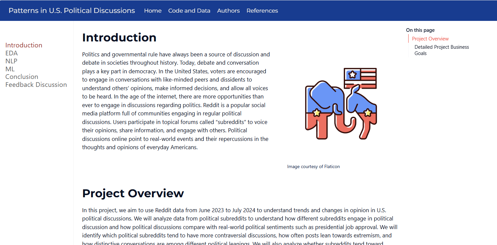
In class Presentations
- Look for the Labs page in each lecture folder (M0X/Lecture) for the list of papers and suggestions for the presentation.
- Each student group will deliver one research paper presentation during the semester.
- Presentation length: approximately 15 minutes
- Each presentation will be followed by guided class discussion
- All students are expected to read the assigned paper(s), regardless of whether they are presenting
- Presentations focus on:
- The problem the paper addresses
- The technical or conceptual contribution
- Limitations and assumptions
- Implications for building generative AI systems
- This component develops skills in critical reading, synthesis, and technical communication.
Individual Assignments
- Four individual assignments.
- Report (word or pdf) and code (jupyter notebook).
- These are more detailed and require more time to complete.
Group Project
- Lecture 0.1 and Lecture 0.2 videos cover basic portfolio creation using GitHub.
- Focuses on equipping students with the knowledge to explore a dataset and extract meaningful insights. Throughout this assignment, you’ll complete the following:
| Component | Points | Description |
|---|---|---|
| Project Milestones through GitHub | 70 | This includes Corpus Familiarization & Chatbot Scope, Text Structuring & Retrieval Units, Embeddings & Retrieval Baseline, Grounded Generation & Guardrails |
| Presentation | 40 | Effectively communicates the project findings and technical work. |
| Group Feedback | 40 | Includes peer feedback and team collaboration evaluation. |
| Total | 150 |
Course Site
- Design and content is subjected to change.
- All the assignments, quizzes, and projects will be posted on the course site.
- The course site is the main source of information for the course.
Office Hours & Consultation Sessions
- Look for office hours page on blackboard.
- Look for Consultation Sessions page on blackboard.
- Consultation Sessions: For detailed help on assignments and projects.
- Held separately on Saturday, time needs to be discussed.
- These will be review of labs and assignments.
- These will be held on Zoom.
- Recorded only if there is an audience.
Tools used in the course
- Python: dominant AI/ML language with simple, fast prototyping.
- PyTorch / TensorFlow: core deep‑learning frameworks for GenAI.
- Hugging Face Transformers: key library for LLMs, text generation, and RAG.
- OpenCV & PIL: essential for image/video processing in GenAI.
What is Generative AI?
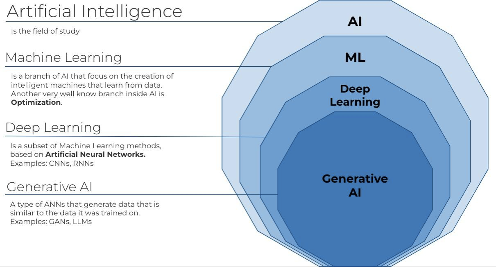
Enterprise AI Landscape
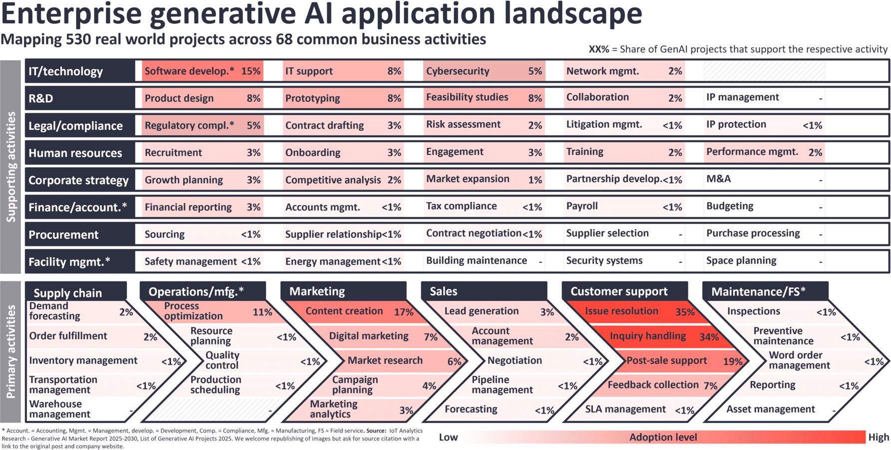
GenAI Core Characteristics
- Learning from existing data
- Generating novel, contextually relevant outputs
- Spanning multiple modalities (text, image, code, audio)
Evolution of Model Architecture
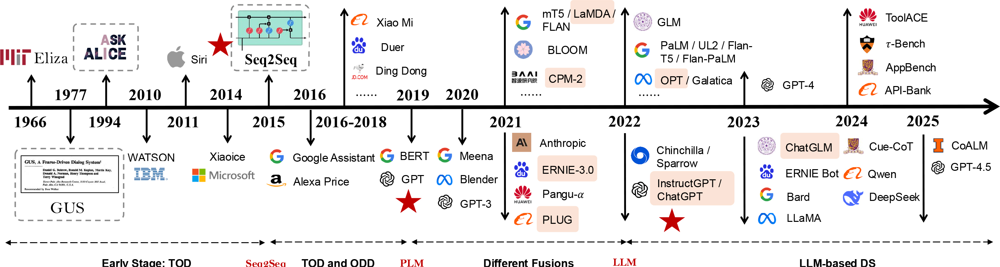
Key Generative Model Architectures
- Foundation Models and Algorithms
- Convolutional Neural Networks (CNNs)
- Recurrent Neural Networks (RNNs)
- Transformer Architecture
- Generative Adversarial Networks (GANs)
- Language Models
- GPT (Generative Pre-trained Transformer)
- BERT (Bidirectional Encoder Representations)
- Image Generation Models
- DALL-E
- Stable Diffusion
- Midjourney
- Multimodal Models
- Amazon Nova
- Meta Llama
- Gemini
- GPT
Simulation, Emulation, and AI
- Given a function/process that exists with complex logical pathways, can it be mimicked by computers?
- Economical transactions of a small city?
- Social interactions between a household?
- Weather patterns over a region?
- Train of thought of researcher doing their job?
- Simulation: The imitation of a process, function, or environment that could exist or at least makes sense.
- Artificial Intelligence: The implementation of systems that perform tasks that seemingly require human skills.
- Machine Learning: The use of algorithms and statistics to identify, act on, and/or mimic patterns.
- Deep Learning: The use of neural networks to create function approximators with machine learning patterns.
Deep Learning - History
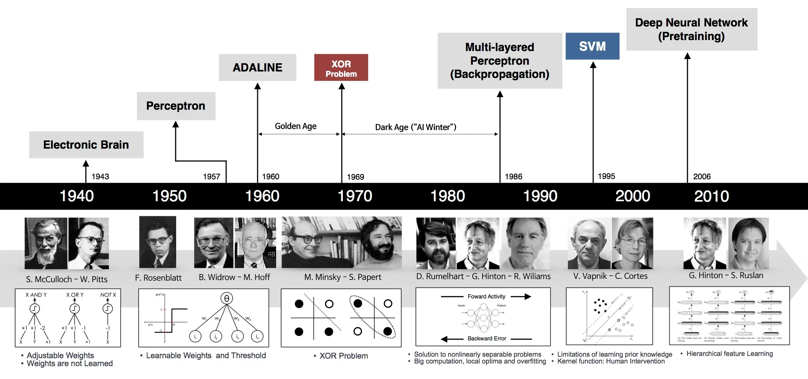
Artificial Intelligence - History

1956 - Dartmouth Conference: The Birth of Artificial Intelligence
Significance
- The term “Artificial Intelligence” was first coined at the Dartmouth Conference, with credit to John McCarthy, one of the event organizers.
- Foundational Moment for AI: This event is often considered the founding moment of AI as a field of study. It was the first time researchers from various disciplines came together to explore the concept of machine intelligence.
1958 - Perceptron by Rosenblatt at Cornell
- The perceptron, introduced by Frank Rosenblatt in 1958, was an early artificial neuron model inspired by the brain and helped launch modern neural networks.
- Despite its impact, it couldn’t handle non–linearly separable problems like XOR, a limitation that shaped future AI research.
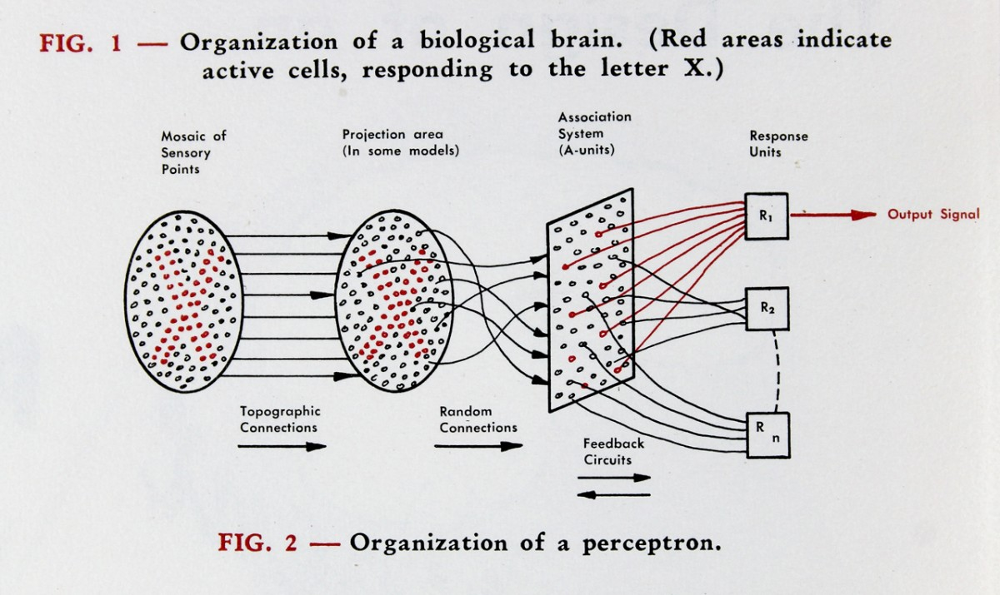
1969 - Analysis of Perceptrons Minsky & Papert
- Minsky and Papert’s book Perceptrons analyzed the strengths and limits of Rosenblatt’s perceptron, emphasizing its inability to solve non‑linearly separable problems like XOR.
- Their critique slowed neural‑network research and contributed to the AI Winter.
- The work also paved the way for later breakthroughs, including backpropagation in the 1980s, which enabled training multilayer networks and revived interest in neural nets.
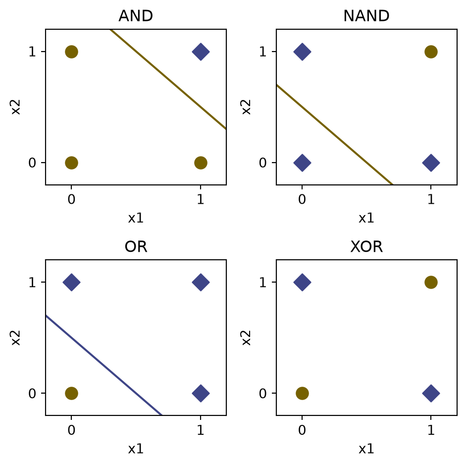
1974-1980 - 1^{\text {st }} AI Winter
1974–1980 — First AI Winter
- Period of reduced funding, interest, and institutional support for AI research
- Triggered by unmet promises of early symbolic AI systems
- Government and industry funding declined sharply
- Many AI labs were closed, downsized, or repurposed
Key Impacts
- Researchers shifted to adjacent fields (statistics, control systems, cognitive science)
- Machine learning and statistical methods progressed quietly
- Emphasized the gap between theoretical breakthroughs and practical deployment
- Established lasting lessons on expectation management in AI research
1980s — Backpropagation Popularized
Backpropagation is a general algorithm for training neural networks by computing gradients of a loss function with respect to model parameters efficiently.
- Core ideas
- Uses the chain rule to propagate error signals backward through layers
- Computes partial derivatives for each weight in the network
- Enables optimization via gradient-based learning (e.g., gradient descent)
- Why it was transformative
- Solved the credit assignment problem in multi-layer networks
- Made it computationally feasible to train deep (for the time) architectures
- Shifted neural networks from theoretical constructs to trainable systems
- Backpropagation unified learning across arbitrary network depth
1980s — Backpropagation Popularized

1986 - Multi-Layer Perceptron (MLP)
The 1986 backpropagation work demonstrated that multi-layer perceptrons (MLPs) could be trained effectively and reliably.
- What changed
- Hidden layers learned internal representations, not hand-engineered features
- Networks captured hierarchical structure in data
- Non-linear activations enabled expressive decision boundaries
- Key advances
- Demonstrated solutions to problems like XOR, impossible for linear models
- Showed learning was distributed across layers, not localized
- Provided empirical evidence that neural networks could generalize
- Why this mattered
- Shifted AI from rule-based reasoning toward representation learning
- Established the conceptual foundation for modern deep learning
1989 - Universal Function Approximation Theory
The Universal Approximation Theorem provided a formal theoretical justification for neural networks.
- Core result
- A feedforward network with:
- One hidden layer
- Finite neurons
- A non-linear activation function
- Can approximate any continuous function on a compact domain
- A feedforward network with:
- What the theorem does (and does not) say
- ✔ Networks are expressive enough in principle
- ✘ Does not guarantee efficient training
- ✘ Does not imply good generalization or data efficiency
- Why it mattered
- Countered claims that neural networks were inherently limited
- Legitimated neural networks as universal function learners
- Encouraged continued research despite computational constraints
Why Didn’t Neural Networks Take Over Immediately?
Despite strong theoretical foundations, neural networks did not dominate AI in the late 1980s and 1990s.
- Key constraints
- Limited data: Large labeled datasets were rare
- Insufficient compute: CPUs were slow; GPUs were not yet available
- Optimization challenges: Training was unstable and slow
- Tooling gaps: No mature frameworks for large-scale experimentation
- Practical consequence
- Neural networks were expressive in theory
- But difficult to train, scale, and deploy in practice
Theory vs Reality
- Capacity ✔
- Learnability ✔
- Scalability ✘
- Reliability ✘
1980s-1990s - The 2^{\text {nd}} AI Winter
- Unmet Expectations: Expert systems, initially promising, failed to generalize beyond narrow domains, leading to disillusionment.
- Economic Recession: The late 1980s recession led to budget cuts in AI research, shifting focus to more immediate technologies.
- Technological Limits: Insufficient computational power and algorithmic challenges hindered AI development.
- Reduced Interest: Funding and interest in AI dropped, leading to a slowdown in research and fewer innovations.
- Legacy and Recovery: Lessons from this period set the stage for the AI resurgence in the late 1990s, paving the way for modern AI advancements
2012 — AlexNet and the Deep Learning Breakthrough
AlexNet marked a decisive turning point in modern AI by demonstrating that deep neural networks scale effectively when paired with sufficient data and computation.
- What AlexNet showed
- Deep convolutional networks could vastly outperform classical vision pipelines
- End-to-end learning outperformed hand-crafted feature engineering
- Performance gains came from scale, not new theory alone
- Why ImageNet mattered
- 1.2M labeled images across 1,000 classes
- AlexNet reduced top-5 error by ~10 percentage points
- Established benchmarks as a driver of progress
- Infrastructure innovation
- Training split across two GPUs due to memory limits
- GPU acceleration enabled faster iteration and deeper architectures
- Marked the beginning of hardware–model co-design in AI
2017+ — Attention Is All You Need and the Transformer Era
The Transformer architecture revolutionized modern AI by replacing recurrence and convolution with attention, fundamentally changing how models process language and sequences.
- Core innovation
- Self-attention enables global context modeling
- Parallelizable training replaces sequential recurrence
- Scales efficiently with data and compute
- Why this mattered
- Dramatically improved performance on NLP tasks
- Enabled large-scale pretraining on unlabeled text
- Decoupled sequence modeling from strict ordering constraints
- From models to platforms
- Transformers became the backbone of:
- Language understanding (e.g., BERT-style models)
- Language generation (e.g., GPT-style models)
- Established the foundation for Large Language Models (LLMs)
- Transformers became the backbone of:
Innovations in Modeling
Research aims to identify:
- Key architectural drivers of model performance
- Scaling laws and emergent capabilities
- New use-cases enabled by model behavior
Common research directions:
- Model analysis via interpretability and controlled experiments
- New architectural components with useful properties
- Domain-aware training paired with scalable architectures
- Improved data and modality-specific learning strategies
Risks of GenAI
Despite its transformative potential, Generative AI introduces systemic risks to core societal foundations:
- Trust & information integrity
- Authenticity of digital records and identity
- Work, skills, and human purpose
These risks are amplified by today’s software environment:
- Ubiquitous data availability
- Always-on connectivity
- Cheap, scalable compute
Risk Mitigation
Mitigation is complex and often costly, requiring deliberate trade-offs in favor of long-term societal value:
- Privacy & security by design
- Transparency & accountability mechanisms
- Fairness, inclusion, and human dignity
- Reliability, validation, and certification
Addressing these challenges frequently requires prioritizing legal, ethical, and social safeguards over short-term efficiency or profit.
Generative AI and Knowledge Creation
Generative AI automates problems that were traditionally hard, skill-intensive, and expensive, producing outputs that are often good enough, scalable, and easily replicated.
This fundamentally lowers the cost of creating content that once required:
- Deep expertise
- Long training and experience
- Significant institutional or financial investment
Result: Knowledge production becomes faster, cheaper, and more widely accessible—but less tightly coupled to expertise.
Enablement vs. Erosion of Knowledge Signals
Enablement and Scale (Pros)
- Rapid synthesis across large and complex datasets
- Broad access to advanced analytical and creative capabilities
- Accelerated experimentation, learning, and innovation
- Empowerment of individuals and small teams at scale
Slop and Misinformation (Cons)
- Convincing text, images, audio, and video can be fabricated at scale
- Expertise can be mimicked without understanding or accountability
- Automated pipelines bypass editorial review and due process
- Long-term effects of widespread synthetic content remain uncertain
Key tension: Generative AI expands knowledge creation while weakening traditional signals of credibility, expertise, and trust.
Societal Impacts from GenAI
- Automation of Routine Tasks:
- Al is automating repetitive jobs like data entry and manufacturing, leading to job reductions in some areas.
- Impact on Skilled Jobs:
- AI is increasingly capable of handling complex task, potentially automating niche-skill/high-memory roles.
- GenAI has been used to lower early career demand due to perceived upper-level role empowerment.
- New Job Opportunities:
- While some jobs are lost, AI can also create new roles in areas like AI development and data science.
- Workers need reskilling to adapt, but some careers / demographics will have disproportionate impact.
- Impact on Psychology:
- Much like the internet (rise of ubiquitous connectivity), psychological impacts of ubiquitous Al is inconclusive.
Broad Risk Mitigation Efforts in AI
AI safety and risk mitigation have become strategic priorities across governments, industry, and civil society. These efforts reflect competing—but overlapping—interests in national security, economic competitiveness, and public trust.
- Key characteristics of the current landscape
- Fragmented but rapidly expanding standards ecosystem
- Mix of voluntary, industry-led initiatives and state-backed institutions
- Emphasis on risk anticipation, not just post-hoc compliance
- Global coordination trend
- Early leadership by a small number of states
- Rapid international replication and diversification
- Increasing public–private collaboration
Examples of Major Mitigation Initiatives
- AI Safety Institute (AISI): Nation-backed institutes focused on systemic AI risks, with early emphasis on national security and frontier models
- AISI Consortium (AISIC) (US): Formal public–private collaboration with industry to support safety research, evaluations, and standards
- Adobe Content Authenticity Initiative (CAI): Founded in 2019 to promote content provenance and authenticity tracking
- Coalition for Content Provenance and Authenticity (C2PA): Open technical standard for cryptographically signed content credentials and metadata
- NVIDIA Model Card++ / Trustworthy AI Efforts: Expanded model documentation covering intended use, testing scope, risks, and deployment guidance
- Open & Sovereign AI Safety Advocacy: Emphasis on secure self-hosting, open models, and safety practices for sensitive or regulated data contexts
Responsible AI: Core Principles
Responsible AI requires continuous evaluation, not one-time compliance. It integrates technical controls, organizational governance, and ethical commitments.
- Privacy & Security: Protect data rights, secure sensitive information, and resist misuse or unauthorized access
- Transparency & Accountability: Enable explainability, document design decisions, assign responsibility, and maintain oversight
- Fairness & Human Dignity: Identify and mitigate bias; support nondiscrimination and equitable outcomes
- Reliability & Certification: Ensure consistent performance, fitness for purpose, and ongoing validation in production
Early Natural Language Processing
What is Natural Language Processing?
- NLP is the subfield of AI concerned with enabling computers to understand, interpret, and generate human language
- Text is unstructured: no rows, no columns, no fixed schema
- Computers need numbers — NLP provides the bridge
Classic NLP Tasks
| Task | Example |
|---|---|
| Tokenization | “great product” → [“great”, “product”] |
| Classification | Review → Positive/Negative |
| Named Entity Recognition | “Apple” → ORG |
| Summarization | Article → Key points |
Why it matters for business
- Analyze customer reviews at scale
- Extract signals from SEC filings
- Route support tickets automatically
- Summarize contracts and reports
Bag of Words (BoW)
- Represent a document as a vector of word counts
- Order is ignored; only frequency matters
- Vocabulary V maps every unique word to a dimension
\mathbf{x}_d = \bigl[\text{count}(w_1, d),\; \text{count}(w_2, d),\; \ldots,\; \text{count}(w_{|V|}, d)\bigr]
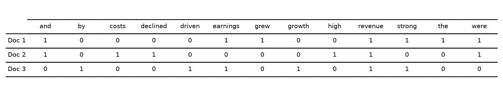
TF-IDF: Weighting Words by Importance
- Term Frequency – Inverse Document Frequency rewards words that are distinctive, not just common
- Stopwords (“the”, “and”) get low scores; domain-specific terms get high scores
\text{TF-IDF}(t, d) = \underbrace{\frac{\text{count}(t, d)}{|d|}}_{\text{TF}} \times \underbrace{\log \frac{N}{1 + \text{df}(t)}}_{\text{IDF}}
Intuition: “Revenue” appearing only in financial docs → high IDF. “The” appearing everywhere → low IDF.
Sentiment Analysis
- Classify text as Positive / Negative / Neutral
- One of the most widely deployed NLP tasks in industry
Examples
| Text | Sentiment |
|---|---|
| “Exceptional product quality” | Positive |
| “Complete waste of money” | Negative |
| “Delivery was on time” | Neutral |
| “Worst customer service ever” | Negative |
Business Applications
- Brand monitoring & social listening
- Product review aggregation
- Earnings call tone analysis
- Customer churn prediction
Early methods: hand-crafted lexicons (VADER, SentiWordNet).
Modern approach: neural networks trained end-to-end on labeled examples.
MLP for Text Classification
\text{Raw Text} \xrightarrow{\text{TF-IDF}} \mathbf{x} \xrightarrow{\text{MLP}} \hat{y}
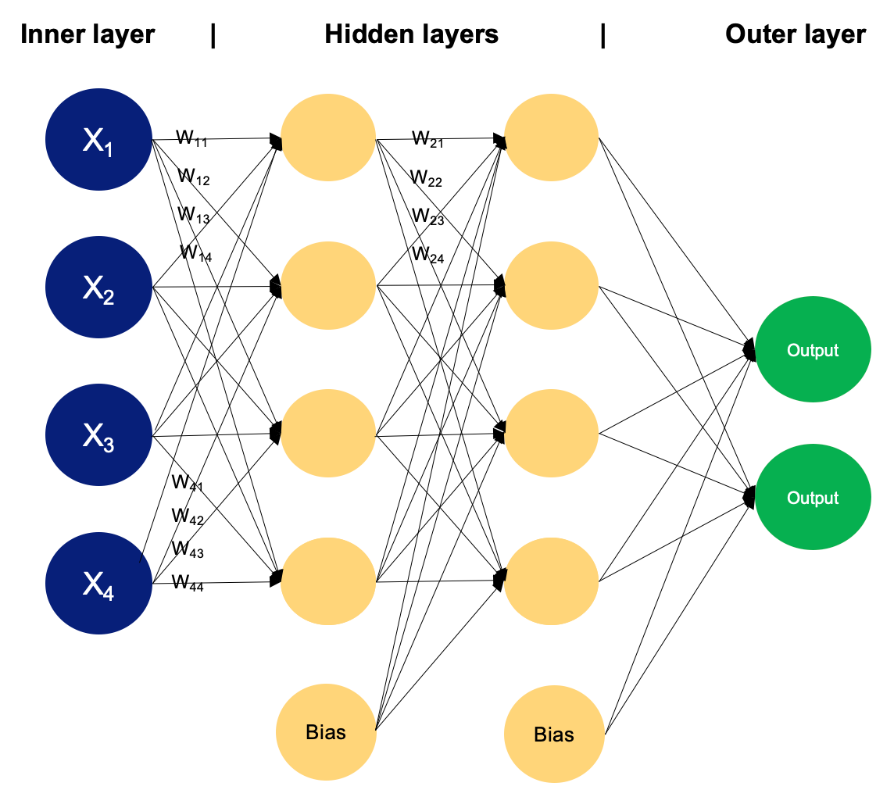
Architecture
| Layer | Size | Activation |
|---|---|---|
| Input | |V| features | — |
| Hidden | 32–256 neurons | ReLU |
| Output | C classes | Softmax |
From Classical NLP to Deep Learning
| Era | Method | Strength | Weakness |
|---|---|---|---|
| 1990s | BoW + Naive Bayes | Simple, fast | Ignores order |
| 2000s | TF-IDF + SVM | Strong baseline | Manual features |
| 2010s | MLP / CNN / RNN | Learns features | Needs labeled data |
| 2017+ | Transformers (BERT, GPT) | Context-aware | High compute cost |
Key insight: Each era builds on the last. TF-IDF vectors are still used to initialize or fine-tune modern models in low-resource settings.
Wang, H., Wang, L., Du, Y., Chen, L., Zhou, J., Wang, Y., and Wong, K.-F. 2023. “A Survey of the Evolution of Language Model-Based Dialogue Systems,” arXiv Preprint arXiv:2311.16789. (https://arxiv.org/abs/2311.16789).